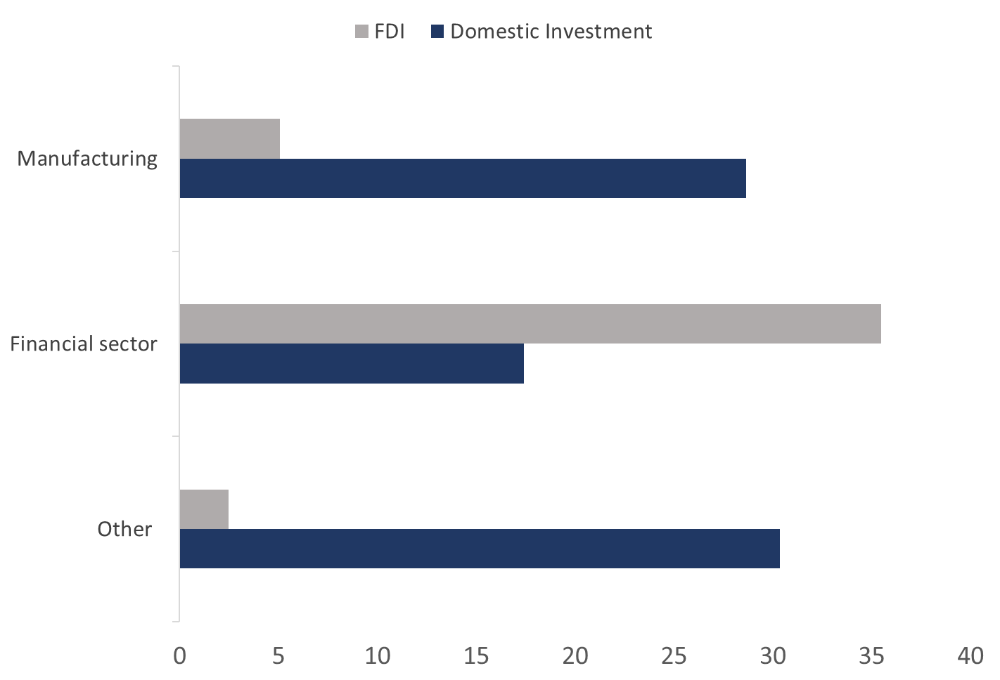

How does FDI transmit into domestic investment? Exploring intra-industry and financial channels
Journal of Comparative Economics, 2026
Abstract summary
Foreign direct investment (FDI) is often seen as a means to boost domestic investment and, hence, capital accumulation. Yet, the empirical support for such a positive investment effect of FDI is inconclusive. A possible reason is that FDI is often directed towards the financial sector, where capital investment tends to be low. In this paper, we develop a novel approach to analyse how FDI into the financial sector transmits into domestic investment by non-financial industries. Our approach uses shares of industries’ financial exposure to attribute shifts in financial FDI to individual non-financial industries. Using industry-level FDI and investment data from 12 Central and Eastern European countries between 1997 and 2019, we find that industries with close links to the financial sector increase domestic investment in the presence of financial FDI, particularly manufacturing, trade and real estate. Additionally, we provide suggestive evidence that this relationship operates through a liquidity channel.
Presentations
- 2025 · FIW International Economics Conference, Vienna.